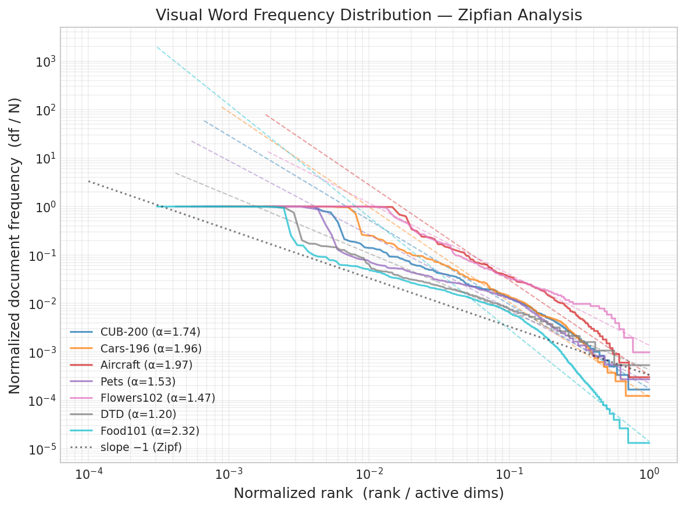
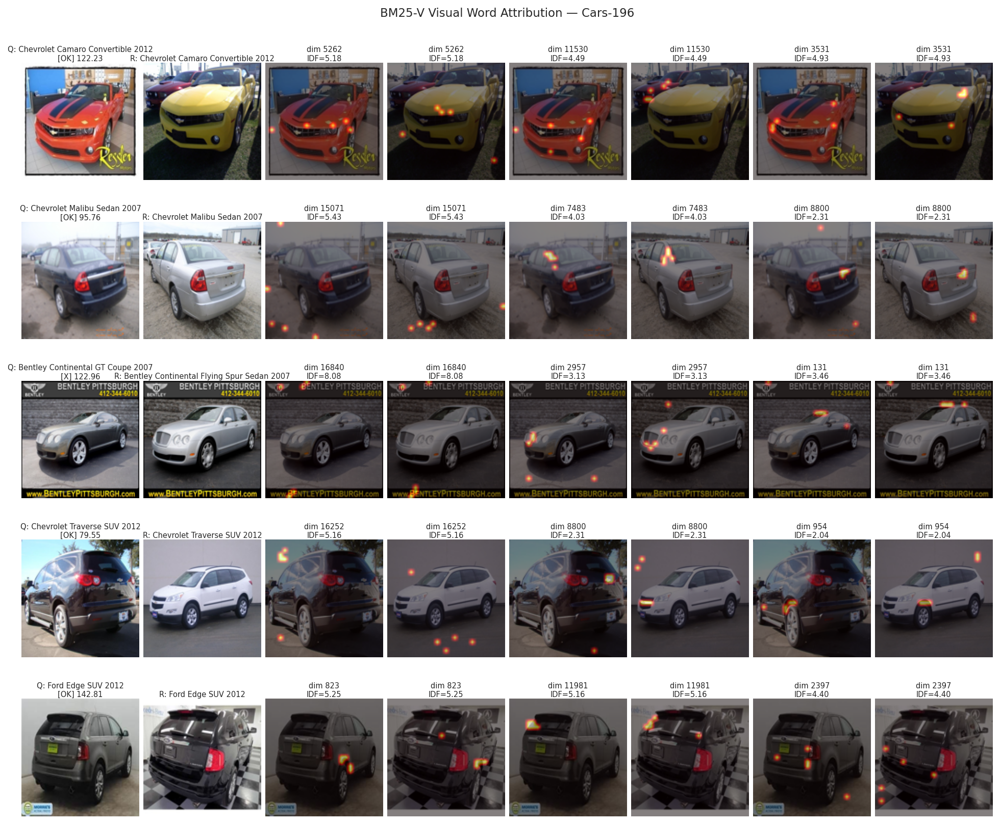
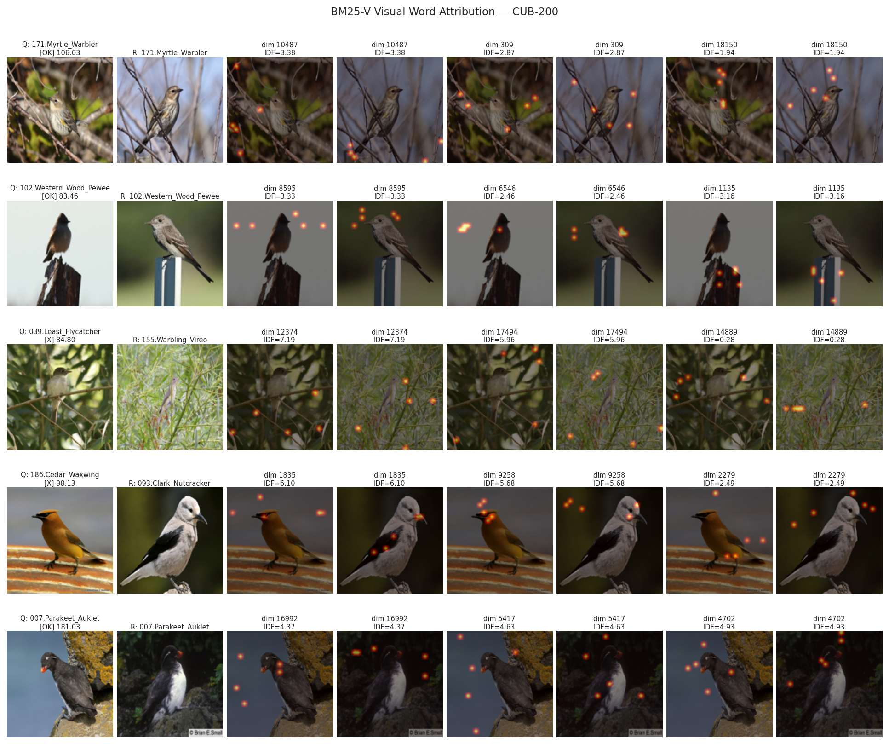
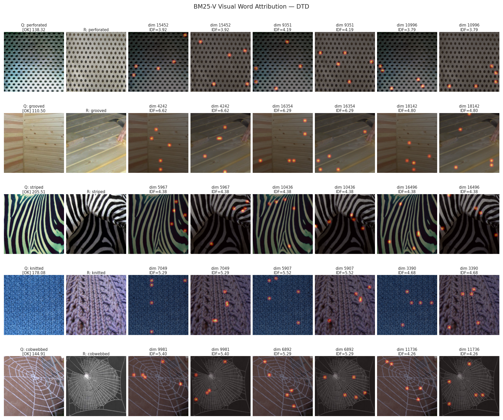
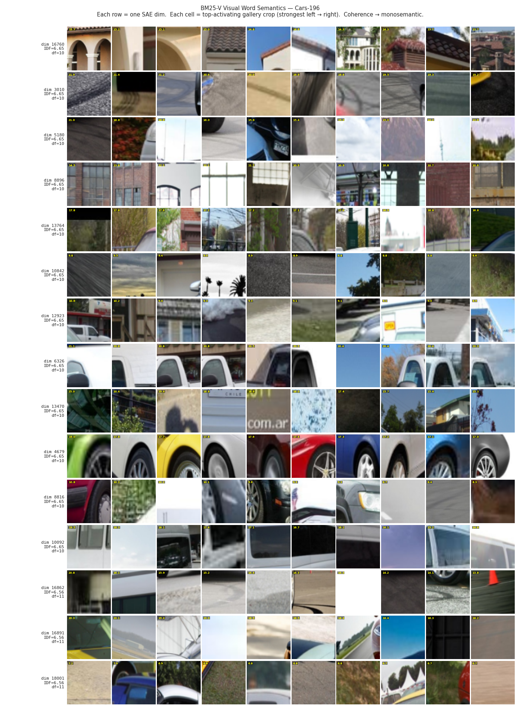

Abstract
Dense image retrieval is accurate but opaque and compute-intensive at scale. We present BM25-V, which applies Okapi BM25 scoring to sparse visual word activations from a Sparse Autoencoder (SAE) on Vision Transformer patch tokens. Visual word frequencies follow a Zipfian distribution across the gallery, making BM25's IDF weighting the principled scoring choice for suppressing pervasive, uninformative visual words and amplifying rare, discriminative ones. BM25-V retrieves high-recall candidates via sparse inverted-index operations at a fraction of the cost of dense search: Recall@200 ≥ 0.993 across all benchmarks, enabling a two-stage pipeline that reranks only K=200 candidates instead of all N, recovering near-exact accuracy (−0.2 pp average across seven benchmarks). An SAE trained once on ImageNet-1K transfers zero-shot to seven fine-grained benchmarks without fine-tuning, and every retrieval decision is attributable to specific visual words with quantified IDF contributions.
Key Highlights
(avg. 7 datasets)
vs. dense float32
vs. HNSW
no fine-tuning
Method Overview
BM25-V bridges the gap between text retrieval and visual search through three key ideas:
- Sparse Visual Words. A frozen SigLIP2 ViT extracts 729 patch-level features (1152-dim each). A Sparse Autoencoder (SAE) projects each patch into a high-dimensional space (18,432 dims) and applies ReLU + top-k sparsification, keeping only k=16 active "visual words" per patch.
- Term Frequency via Sum-Pooling. Sparse patch vectors are sum-pooled across all patches to produce a single image-level vector. The accumulated activation magnitude naturally serves as term frequency (TF) — visual words that fire consistently across many patches get higher TF.
- BM25 Scoring with IDF. Inverse Document Frequency (IDF) is computed from the gallery, down-weighting pervasive background features and amplifying rare discriminative ones. Scoring follows the standard Okapi BM25 formula, operating through sparse matrix multiplication on inverted posting lists.
The two-stage pipeline combines BM25-V (fast sparse first stage, top-200 candidates) with dense cosine reranking, recovering near-exact dense accuracy while providing interpretable attribution.
Main Results
Cross-domain retrieval: SAE trained on ImageNet-1K, applied zero-shot to all target datasets. The two-stage system matches full dense retrieval within rounding (−0.2 pp average R@1).
| Method | CUB-200 | Cars-196 | Aircraft | Pets | Flowers | DTD | Food-101 |
|---|---|---|---|---|---|---|---|
| Dense (cosine)† | .767 | .922 | .707 | .912 | .989 | .762 | .954 |
| FAISS-HNSW† | .768 | .922 | .708 | .912 | .989 | .762 | .954 |
| FAISS-IVF+PQ† | .734 | .897 | .715 | .915 | .941 | .706 | .941 |
| BM25-V (ours) | .472 | .715 | .523 | .771 | .954 | .747 | .865 |
| Two-stage K=200 (ours) | .755 | .918 | .704 | .911 | .991 | .769 | .950 |
† Dense-only methods (no interpretability). Bold = two-stage exceeds full dense. R@1 reported.
Zipfian Distribution of Visual Words
Visual word frequencies follow a power-law (Zipfian) distribution with exponents α ∈ [1.20, 2.32] — steeper than natural language (α ≈ 1). This means most visual words are rare and discriminative, while a small "head" of common words acts as visual stop words. BM25's IDF weighting is the principled response to this distribution: it suppresses the common head and amplifies the discriminative tail.

Rank-frequency plot across 7 datasets. Near-parallel lines confirm all datasets share the same Zipfian distributional form.
Interpretable Retrieval Attribution
BM25-V is interpretable by construction: the score for any (query, retrieved) pair decomposes as a sum of IDF-weighted terms, one per shared visual word. Unlike dense retrieval where the match is an opaque inner product, BM25-V attribution is exact and requires no approximation.
Cars-196

The highest-IDF shared word (IDF=6.99) activates on the distinctive racing stripe — a model-specific marking rare across the reference set.
CUB-200-2011

Matched Baltimore Oriole pairs share a dimension (IDF=5.90) that fires on the orange breast plumage — the primary field mark used by ornithologists.
Describable Textures (DTD)

A dimension (IDF=5.40) detects grid intersection points across different materials, capturing geometry across diverse textures.
Visual Word Semantics
Each SAE dimension encodes a specific visual concept. For high-IDF dimensions, collecting the strongest-activating crops from the reference set reveals visually coherent patterns — confirming monosemantic encoding.

Visual word semantics on Cars-196. Each row is one SAE dimension; each cell is a reference-set crop sorted by activation strength. Coherent rows indicate monosemantic dimensions.